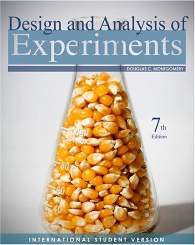

Design and Analysis of Experiment
Trygve Almøy
2017
Practical Information
Note: Editions 6, 7 and 8 of Montgomery can all be used. Note, however, that the numbering of exercises and tables typically differs and information is given to clarify as needed. The data is in the fronter folder data, also in some cases where the student is asked to input the data.
Book we use in this course

Exercise and Page Number in Different Editions
| Table.Exercise | Edition6 | Edition7 | Edition8 |
|---|---|---|---|
| Table | 2.5 | 2.50 | 2.60 |
| Exercise | Missing | 2.20 | 2.10 |
| Exercise | Missing | 2.30 | 2.30 |
| Exercise | 2.5 | 2.16 | 2.20 |
| Exercise | 2.13 | 2.21 | 2.29 |
| Exercise | 2.18 | 2.27 | 2.34 |